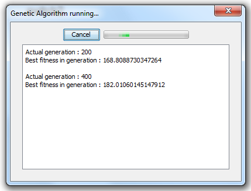

Tutorial 3: Advanced features
Advanced features
First, we will talk about Automatic layout feature.
Automatic layout
The original idea of automatic layout included loading network without information about component position. The program would place component automatically. When developing PSImulator project, we found out, that the network would be created only in graphic editor, so the automatic layout feature is not necessary any more.
Automatic layout remains in program as an example of Genetic algorithm usage.
How to invoke automatic layout
Open some existing network first.
Automatic layout can be accessed by clicking the right mouse button anywhere except on components:

Running the alorithm
Automatic layout is implemented using Genetic algorithm and is time-consuming. After start of GA you will see the following screen:
You can cancel the algorithm anytime.
After finnishing the algorithm the dialog will close automatically and the result will be displayed:

Next part of this tutorial is: Telnet for virtual device access.